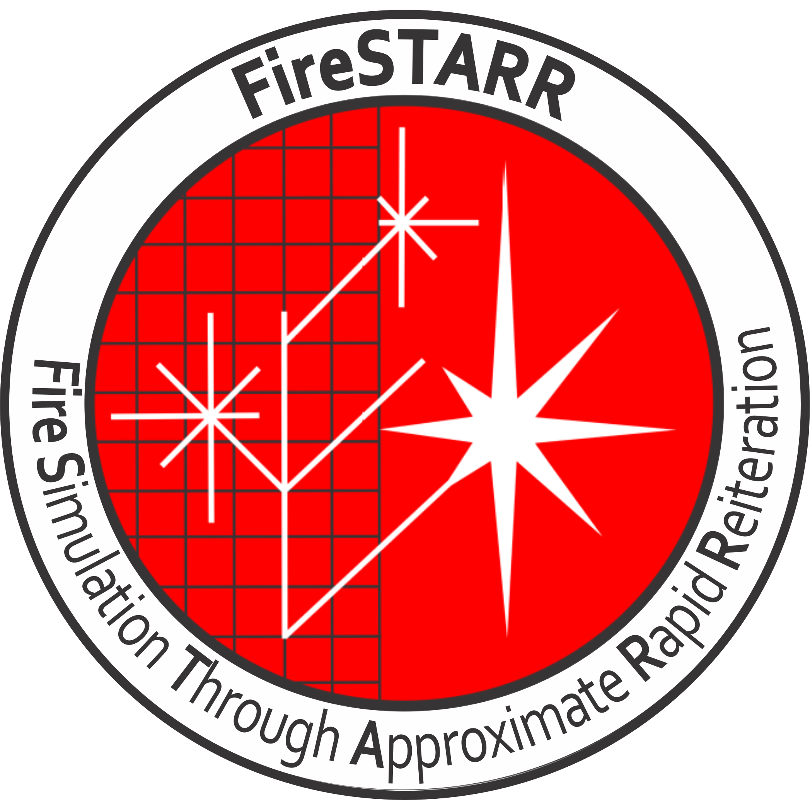
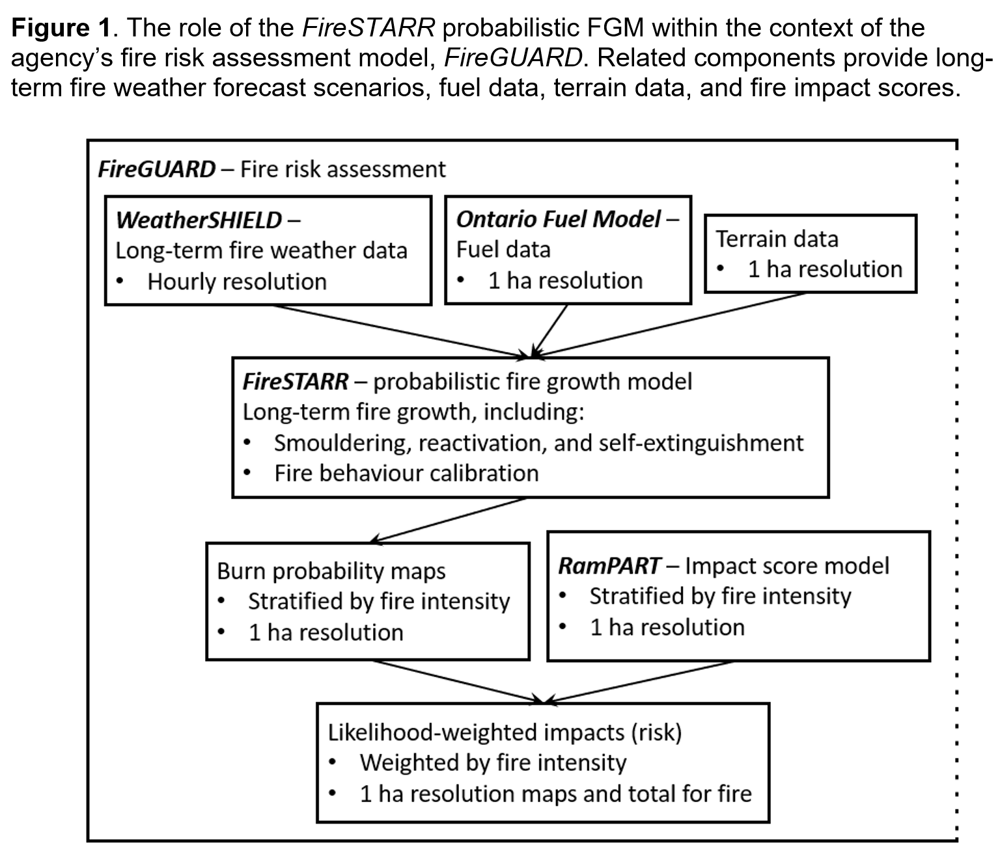

|
FireSTARR
|
|
FireSTARR
|

FireSTARR is designed to support wildland fire response decision-making, and is the fire growth algorithm originally in the FireGUARD suite of programs.
It focuses on the generation of burn probabilities from replicated simulation of fire growth, smouldering, and natural extinction under the weather and stochastic fire behaviour scenarios.

All covered works (e.g., copies of this work, derived works) must include a copy of the file (or an updated version of it) that details credits for work up to the time of the original open source release. That file is available here.